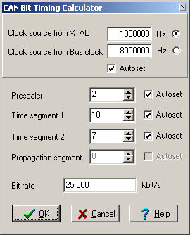

|
|
CAN Wizard for Freescale CAN 2.0B
The CAN Wizard tool allows you to set the CAN device timing correctly. This tool automatically recalculates possible timing and respects recommended conditions
for correct operation of the CAN device. You can specify bitrate of the device, in this case Wizard sets clock source, prescaler and time segments automatically, or you can specify
each part separately. If you can specify only bitrate, select the bitrate edit box, write your requested bitrate in kbit/s and press enter key. All timing parts
will be recalculated (except parts which have unchecked the Autoset check box). Clock source, Prescaler, Time segment 1, Time segment 2 and Propagation segment have 'Autoset' check boxes.
If check box is checked this property can be changed during recalculating of the requested bitrate. If you uncheck some property, this property will not be changed during recalculating.
Notes:
CAN Wizard dialog picture:  |